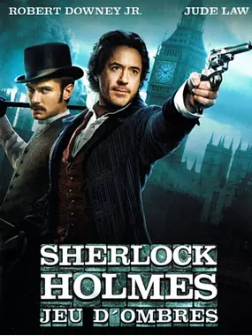

Les differents filmes

- Terence Fisher
- Le Chien des Baskerville (1959)
- Sidney Lanfield
- Le Chien des Baskerville (1939)
- Guy Ritchie
- Sherlock Holmes : Jeu d'ombres (2011)
- Sherlock Holmes (2009)
- Roy William Neill
- Échec à la mort (1943)
- La Griffe sanglante (1944)
- La Maison de la peur (1945)
- La Femme en vert (1945)
- La Femme aux araignées (1943)
- La Perle des Borgia (1944)
- Le Train de la mort (1946)
- La Clef (1946)
- Sherlock Holmes à Washington (1943)
- Alfred L. Werker
- John Rawlins
- Sherlock Holmes et la Voix de la terreur (1942)